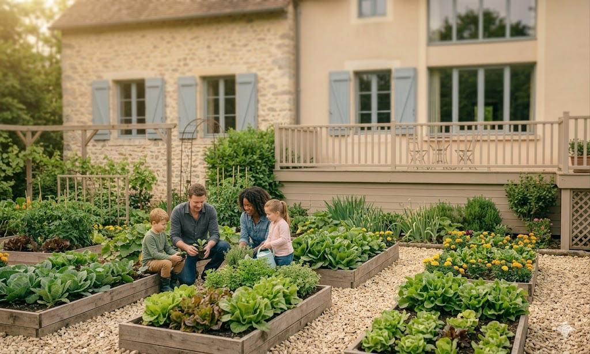
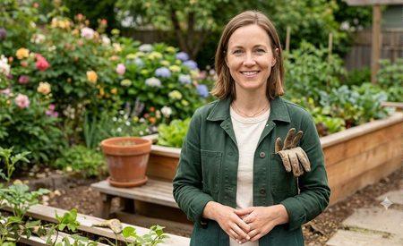
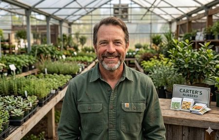
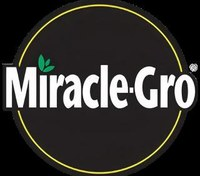
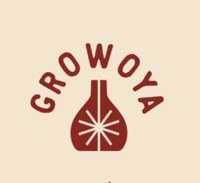

06
The Designs

▶ LAUNCH PROTOTYPE
Interactive Figma prototype — opens in a new tab.

"Save water, Grow better."
50%
WATER REDUCTION
8
PAGES DESIGNED END-TO-END
1
INTERACTIVE CALCULATOR
Design a user-friendly e-commerce site that educates, engages, and drives users to choose Plant Diaper for sustainable gardening — without assuming they already know why water retention matters.

Emily maintains a mixed home garden that includes indoor plants, balcony herbs, outdoor vegetables, and perennial flowering plants.
interest
Keep plants healthy with less frequent watering.
goals
Water runoff wastes fertiliser and nutrients.
difficulty
"I want healthier plants without spending hours maintaining them every day."
She wants a product that retains moisture to improve plant survival during transit.
interest
Reduce shipping-related plant damage
goals
Needs eco-friendly alternatives to synthetic moisture solutions
difficulty
"A gifted plant should arrive fresh, healthy, and ready to thrive."

He constantly looks for innovative products that improve customer satisfaction and reduce plant maintenance
interest
Offer unique eco-friendly gardening solutions
goals
Plant survival after purchase affects customer trust
difficulty
"If my customers succeed with their plants, they'll keep coming back."

Miracle-Gro
Not organicTree Diaper
Manual monitoring
Growoya
Brittle potsKyari
Gifting angle onlyOrganic Bazar
Distribution gapsMiracle-Gro had scale but wasn't organic. Tree Diaper required manual monitoring. Growoya's pots were brittle. Kyari leaned into gifting angles. None combined durable + organic + truly hands-off — that was the wedge.
Plant Diaper came to the engagement without settled product sizing, bundles, or pricing. UX started upstream — helping define the product lineup and voice before a single screen was drawn.
Organic, sustainable claims are everywhere. Buyers are sceptical. Any site that led with features before building credibility would lose the user before the add-to-cart. Sequence mattered.
Wholesale buyers found nothing useful on competitor sites — they bounced. A dedicated partner flow with wholesale pricing and training support was a gap nobody had filled well.
An eight-page site built around one narrative: durable, organic, hands-off. The homepage is a persuasion sequence — hero that sells the feeling of gardening first, then the product, then the five-layer mechanism explained simply, then credibility stats, then a 90-day comparison, then the CTA. Trust is earned before the ask is made. Beyond the homepage: a product finder for buyers who are ready, a wholesale partner flow for Olivias, a blog for between-purchase presence, and a full support suite (FAQ, shipping, returns, contact) so it works as a real storefront.
Full persuasion-sequence homepage (8 distinct sections)
Product finder with size + use-case filtering
Wholesale partner application and pricing flow
Blog and community section for organic retention
Live savings calculator — the interactive centrepiece
FAQ, shipping, returns, and contact support pages
90-day growth comparison: with vs. without Plant Diaper
Selling the feeling of gardening first, then the product.
Enter your plant count, type, and watering frequency. It estimates annual water saved and the trees-equivalent, running on real per-plant data across 12 plant types.
HOW MANY PLANTS?
37 plants
WHAT PLANT DO YOU HAVE?
WATER PER PLANT
1.5L
HOW MANY TIMES A WEEK DO YOU WATER?
3 times
YOUR ANNUAL SAVINGS
Water Saved
4.3 thousand liters
Environmental Impact
40% less fertilizer loss
The calculator went through four iterations. The first was a fixed infographic — impressive-looking, but passive. The brief kept asking: what if someone could input their actual plant count and type? By iteration four it ran on per-plant water data across 12 plant types, from 0.5L for succulents to 4L for zucchini. The number changes with what you actually grow. That shift from brand claim to personal proof is what made it worth showing in a portfolio.
Interactive Figma prototype — opens in a new tab.
Plant Diaper came to us with almost nothing decided — not even product sizing or combos. Before I could design a single screen, we had to help position the business itself. UX starts upstream of the interface: pricing, product lineup, and brand voice all shape what "good design" even means.
The site isn't just a set of screens — it's a sequence. A hero carousel that sells the feeling of gardening, then the product intro, then how it works, then credibility metrics, then comparison videos, then the CTA. Each step earns the next. Skip one and the CTA feels premature.
Colour, button shape, even spacing all provoke a feeling before the user reads a word. My job wasn't just to make it usable. It was to make the user feel like Plant Diaper is the answer to their garden problem before they've consciously decided to buy.
50%
WATER REDUCTION
8
PAGES DESIGNED END-TO-END
4
CALCULATOR ITERATIONS